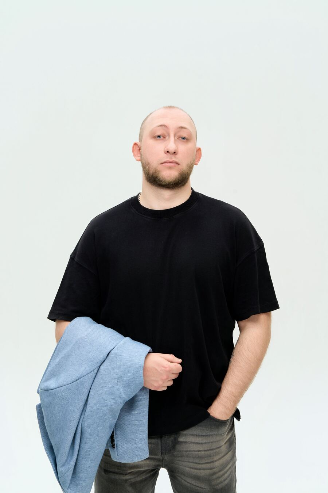
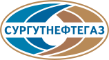

С 2013 года в digital
Работали с разными нишами, бизнес-моделями и стадиями развития бизнеса. Опыт помогает быстрее разобраться в задаче и найти рабочее решение.
Агентство интернет-маркетинга
Выстраиваем управляемую систему привлечения клиентов: приводим целевую аудиторию, помогаем превращать трафик в заявки и настраиваем аналитику.
Реальные кейсы наших клиентов: помогли достичь результат многим компаниям в России.
Можно заказать отдельную услугу или сразу несколько направлений в комплексе. Мы подбираем только те инструменты, которые действительно нужны для решения вашей задачи и достижения результата.
Объединяем сайт, SEO, рекламу, аналитику и CRM в единую систему, чтобы каждый вложенный рубль работал на привлечение заявок.
Сначала определяем, что даст максимальный результат именно в вашей ситуации, затем распределяем приоритеты и бюджет и постепенно улучшаем путь клиента — от первого визита до обращения.
Продвижение приводит потенциальных клиентов, сайт помогает им разобраться в предложении и обратиться, а аналитика показывает, что происходит дальше и какие каналы дают результат.
Используем SEO, контекстную рекламу, карты и другие подходящие каналы. Оцениваем количество и качество привлечённого трафика.
Проектируем понятную структуру, страницы услуг и удобные способы связи. Человеку проще разобраться в предложении, выбрать подходящий вариант и обратиться в компанию.
Настраиваем цели, телефонию, CRM и отчётность. Видим обращения, конверсию, стоимость заявки и, где это возможно, продажи по каждому каналу.
Видим, где теряются обращения, что нужно улучшить и куда выгоднее направлять бюджет для дальнейшего роста.
Работаем с задачей бизнеса целиком: разбираемся в продукте и аудитории, выбираем подходящие каналы привлечения клиентов, связываем сайт, продвижение и аналитику в единую систему.
Работали с разными нишами, бизнес-моделями и стадиями развития бизнеса. Опыт помогает быстрее разобраться в задаче и найти рабочее решение.
Разработчики, дизайнеры, SEO-специалисты, маркетологи и аналитики работают в рамках одного проекта и общей задачи.
Перед началом работ разбираемся в продукте, аудитории, спросе, конкурентах и анализируем, как клиенты сейчас находят компанию и принимают решение об обращении.
Разделяем проект на этапы, показываем, что входит в стоимость, что важно сделать сейчас и какие задачи можно перенести на следующие этапы развития проекта.
Не заканчиваем работу после запуска. Исправляем возникающие проблемы, развиваем сайт и продвижение, анализируем результаты и подключаем новые задачи по мере развития бизнеса.
Состав этапов зависит от задачи, но общий принцип остаётся одинаковым: сначала разбираемся в бизнесе, затем проектируем решение и только после этого запускаем производство и продвижение.
Разбираемся в продукте, аудитории, бизнес-модели и целях проекта. Выясняем, какую задачу нужно решить и какой результат будет значим для бизнеса.
Изучаем спрос и конкурентов, оцениваем сайт, поисковую видимость, рекламу и аналитику. Находим сильные и слабые места и определяем точки для роста.
Выбираем инструменты и каналы привлечения клиентов, которые нужны проекту сейчас. Составляем план работ, определяем последовательность запуска и фиксируем контрольные показатели.
Подключаем специалистов нужных направлений: разработчиков, дизайнеров, SEO-специалистов, маркетологов и аналитиков. Руководитель проекта координирует работу команды и отвечает за то, чтобы все специалисты двигались в рамках единого плана и общей задачи.
Отслеживаем обращения, конверсию, стоимость привлечения и другие показатели, важные для бизнеса. Сравниваем их с исходными данными и контрольными показателями.
На основе результатов корректируем рекламу, развиваем сайт и SEO, тестируем гипотезы и усиливаем направления, которые показывают лучшую отдачу.
Над проектами работают специалисты по аналитике, проектированию, дизайну, разработке, SEO и рекламе. Средний опыт наших специалистов в digital — более 10 лет.
Подробнее о компании
Позиция директора
За годы работы я убедился: клиенту не нужен маркетинг ради маркетинга.
Нужны заявки и продажи. Поэтому сначала разбираемся, что реально работает в вашем бизнесе, — и только потом предлагаем решение.

«Заказывали SEO-продвижение и контекстную рекламу. За 4 месяца поток пациентов вырос в 2 раза. Команда всегда на связи, отчёты понятные, без воды.»
«Ребята сделали нам сайт и настроили CRM. Наконец-то видим, откуда приходят заявки и сколько стоит каждый лид. Рекомендуем.»
«Работаем с A1 уже третий год. Сайт, SEO, реклама — всё в одних руках. Удобно, что не нужно объяснять задачу разным подрядчикам.»
«Запустили таргет в ВК и лендинг на процедуры. Записи выросли на 60%, а стоимость заявки снизилась вдвое. Очень довольна результатом.»
«Сделали сайт ЖК с шахматкой и 3D-туром. Настроили сквозную аналитику до брони. Теперь точно знаем, какой канал приносит покупателей.»
«Перенесли курсы на новую платформу, сделали автоворонку и интеграцию с amoCRM. Продажи курсов выросли на 40% уже в первый месяц.»
Нет. На первом этапе достаточно рассказать о компании, услугах, текущем сайте и задачах. Мы поможем сформулировать требования и подготовим структуру будущего проекта.
Стоимость зависит от масштаба задачи, сложности работ, функциональности, состава команды и необходимого объёма продвижения. После первого обсуждения мы подготовим состав работ и предварительную оценку.
Посмотреть ориентировочные ценыНебольшая задача может занять до недели. Разработка многостраничного сайта, интернет-магазина или сложного сервиса обычно требует больше времени. Точные сроки фиксируются после анализа и проектирования.
За коммуникацию отвечает руководитель проекта. К работе подключаются необходимые специалисты: аналитик, дизайнер, разработчик, SEO-специалист, маркетолог или специалист по рекламе.
Мы тестируем сайт, исправляем технические ошибки в рамках гарантии, подключаем продвижение и при необходимости продолжаем развивать структуру, контент и функциональность.
У каждого проекта есть project-менеджер — ваш единый контакт с командой. Он собирает задачи, контролирует сроки, отчитывается о результатах. Связь — Telegram или email на ваше усмотрение, созвоны раз в 1–2 недели. За задачи отвечают штатные специалисты: разработчик, дизайнер, SEO-оптимизатор, маркетолог. Никаких субподрядов.
Мы работаем по этапам с фиксированными точками сдачи. На каждом этапе вы принимаете работу — если что-то не так, дорабатываем без доплат. По услугам с измеримым результатом (SEO, реклама) — еженедельные отчёты с метриками. Если по итогам 3 месяцев работы не видно движения по KPI — пересматриваем стратегию или возвращаем средства за непринятые этапы. В договоре прописано конкретно.
Скорее всего да. С 2013 года работали со стоматологиями, автосалонами, медклиниками, косметологией, ЖК, онлайн-курсами и промышленностью. Если ниши нет в портфолио — на брифе обсудим, как накопленная экспертиза переносится на вашу задачу.
Связаться
Напишите в любой удобный мессенджер — пришлём план работ и смету за 1 рабочий день. Первая консультация бесплатно.
Обычно отвечаем за 15 минут